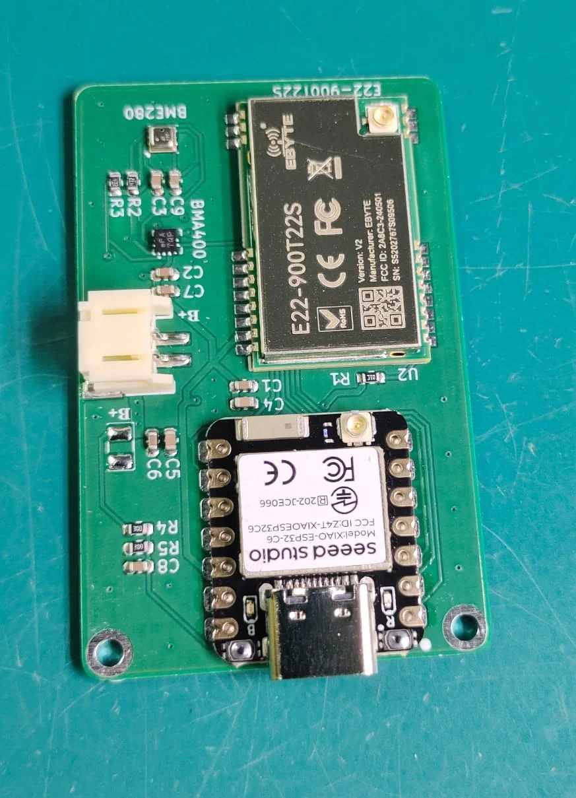
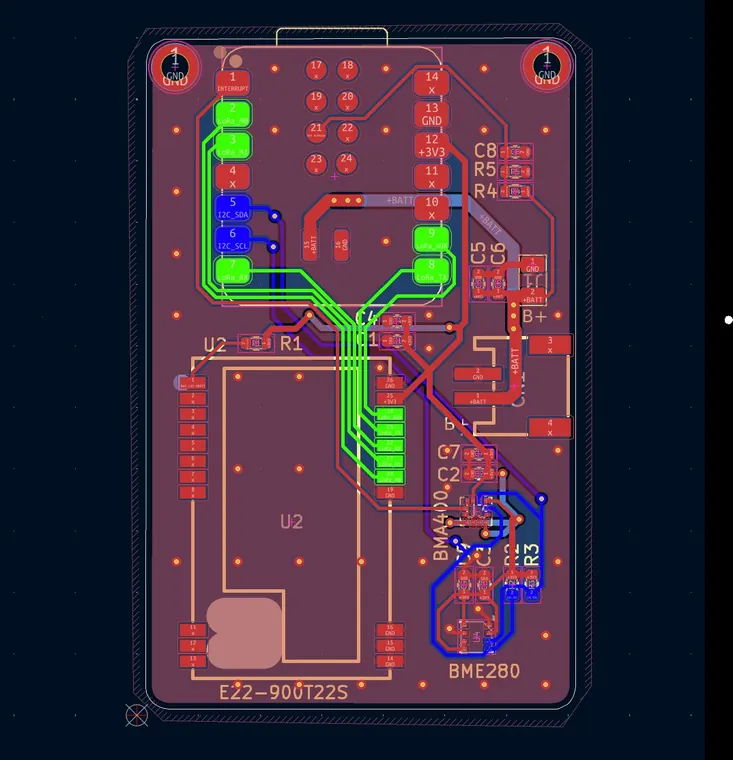

Client project · KiCad · PCBWay
Low-Power Cattle Health Monitor
A low-power device that tracks a cow's body orientation and body temperature, built around an ESP32-C6. I designed the schematic and PCB in KiCad for a client; the firmware was developed by someone else.

Design highlights
- Low power by design. About 450 µA average current (calculated), so the device runs about 6 months on a single charge of a 1S 2200 mAh Li-ion battery.
- Two health signals. Body orientation from an accelerometer, and body temperature.
- From schematic to manufactured board. Designed in KiCad around an ESP32-C6 and manufactured by PCBWay.
Gallery
Click an image to enlarge it.

